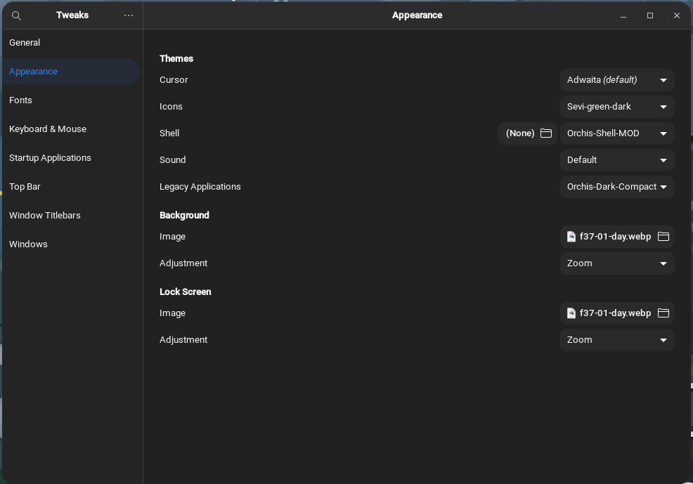
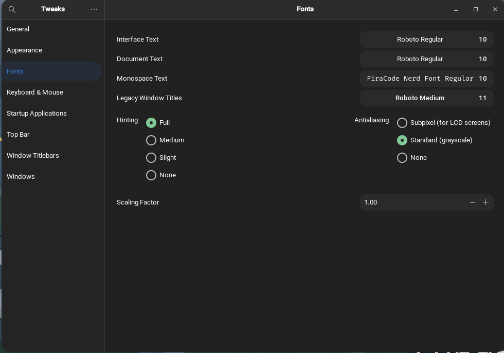
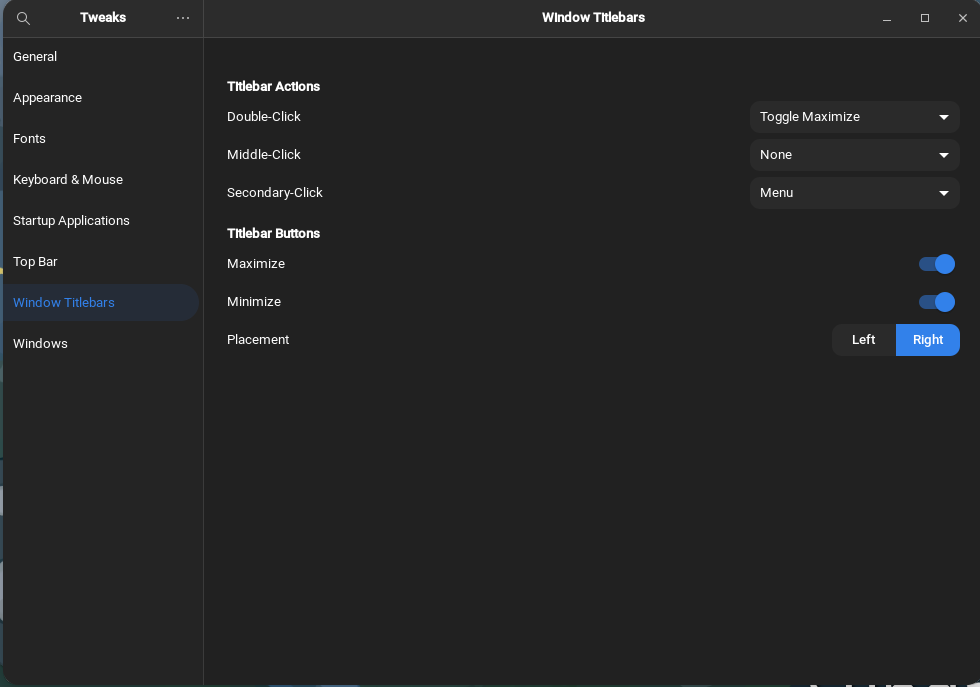

How i custom fedora os
created on date 01-10-2023
Installing Custome GNOME Shell Theme
- open and extract file Orchis-Shell-MOD
- and copy file to folder ./Home/.themes
Installing Fonts and Wallpaper
- open and extract file fonts.zip
- copy file fonts to folder ./home/.local/share
- open and extract file backgrounds.zip
- copy file background to folder ./home/.local/share
Installing GNOME Extensions
Change theme, icons, fonts and wallpaper
Appearance Setting

Fonts Setting

Window Setting

Configure GNOME Extensions
- open and extract file gnome-extensions-settings.zip
- open terminal in folders /Downloads
-
dconf load /org/gnome/shell/extensions/ <
gnome-extensions-settings.conf
- and restart pc or log out
- install Extension in software apps
Customize Firefox web browser